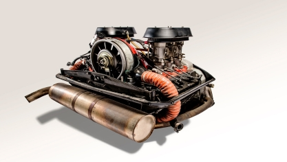
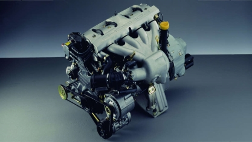
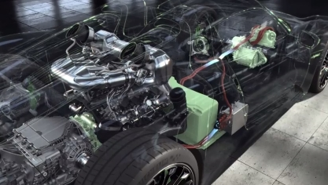
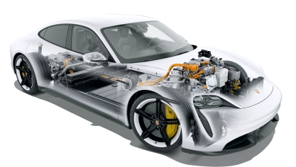
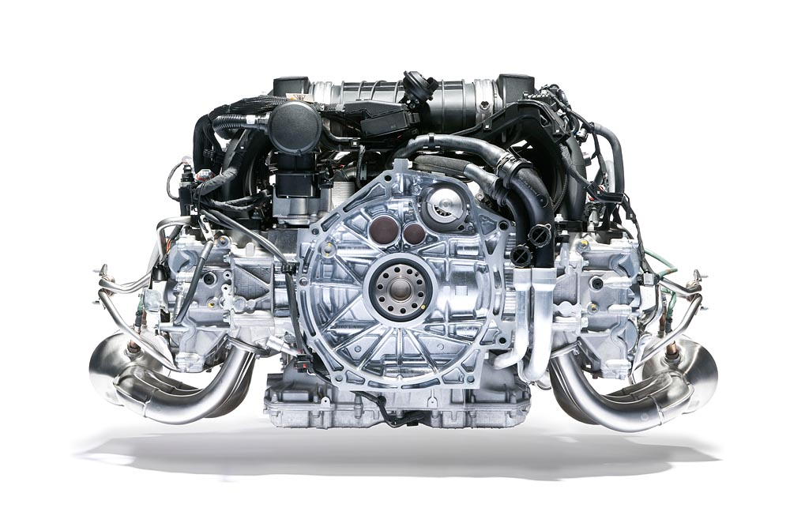
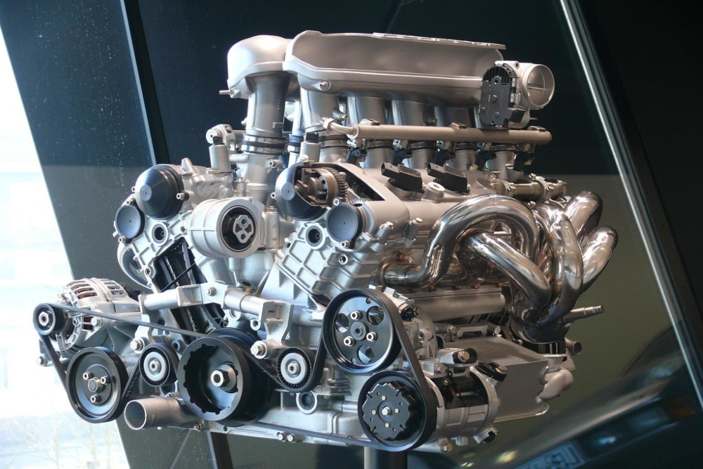
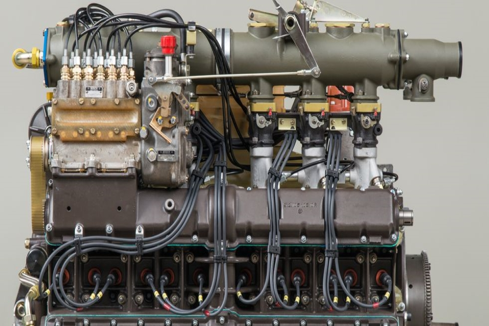

Porsche's early engines were air-cooled, which made them lightweight and efficient. These engines were used in many of Porsche's early sports cars, including the 356 and the early versions of the 911. The air-cooled engines were known for their distinctive sound and reliability, and they helped to establish Porsche's reputation for high-performance cars.

In the 1990s, Porsche began transitioning from air-cooled to water-cooled engines. The water-cooled engines provided improved performance and efficiency, and they allowed Porsche to comply with stricter emissions standards. The first water-cooled engine was introduced in the Porsche 968, and it was later used in the 996 and 997 versions of the 911.

Porsche has also been a leader in hybrid engine technology. The Porsche 918 Spyder, which was introduced in 2013, featured a hybrid engine that combined a V8 gasoline engine with two electric motors. The hybrid engine provided improved fuel efficiency and reduced emissions, while still delivering the high-performance that Porsche is known for.

In 2019, Porsche launched its first fully electric car, the Taycan. The Taycan is powered by two electric motors that produce a combined output of up to 751 horsepower. The electric engine provides instant torque and acceleration, and it can be charged quickly using Porsche's high-speed charging network.

The Porsche Flat-Six engine is one of the most recognizable engines in the world. This engine has been used in many of Porsche's most iconic cars, including the 911 and the Boxster. The Flat-Six is known for its distinctive sound and high-revving performance.

The Carrera GT V10 engine was used in Porsche's supercar, the Carrera GT. Capable of producing over 600 horsepower and with a top speed of over 200 mph, this engine is a testament to Porsche's commitment to high-performance vehicles.

The Porsche 917 was a dominant race car in the 1970s. It was powered by a 4.5-liter, flat-twelve engine that produced over 600 horsepower. The 917's engine is widely considered to be one of the most legendary engines in motorsports history and helped establish Porsche as a leader in high-performance racing technology.
Porsche is known for its meticulous attention to detail and precision manufacturing, and this extends to its engines as well. Porsche's engines are hand-built by skilled technicians at its factory in Stuttgart, Germany. Each engine is carefully crafted to meet Porsche's exacting standards for performance, reliability, and quality.
Before an engine leaves the factory, it undergoes a rigorous testing process to ensure that it meets Porsche's high standards. This testing includes bench testing, dyno testing, and road testing. Each engine is tested for performance, efficiency, and emissions compliance.
Porsche continues to push the boundaries of automotive engineering and design, and its engines are no exception. In the coming years, Porsche plans to expand its lineup of electric and hybrid vehicles, while continuing to refine its gasoline engines.
One area of focus for Porsche is improving the efficiency of its engines without sacrificing performance. Porsche is investing heavily in new technologies such as turbocharging, direct injection, and variable valve timing to achieve this goal.
Another area of focus for Porsche is sustainability. Porsche has set a goal of becoming carbon neutral by 2030, and its engines will play a key role in achieving this goal. Porsche is exploring new materials and manufacturing processes to reduce the environmental impact of its engines, while still delivering the high-performance and driving experience that Porsche is known for.